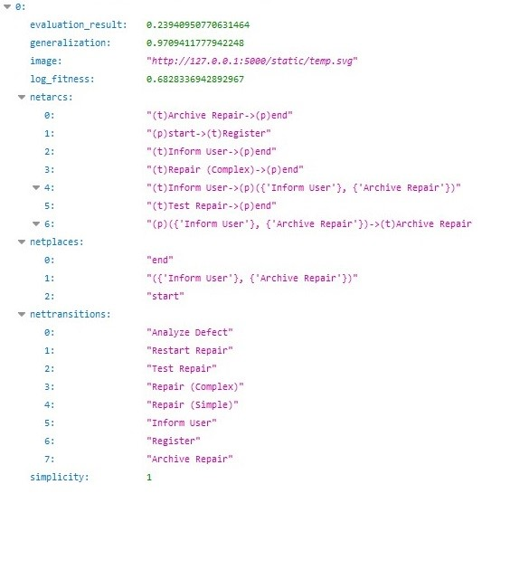
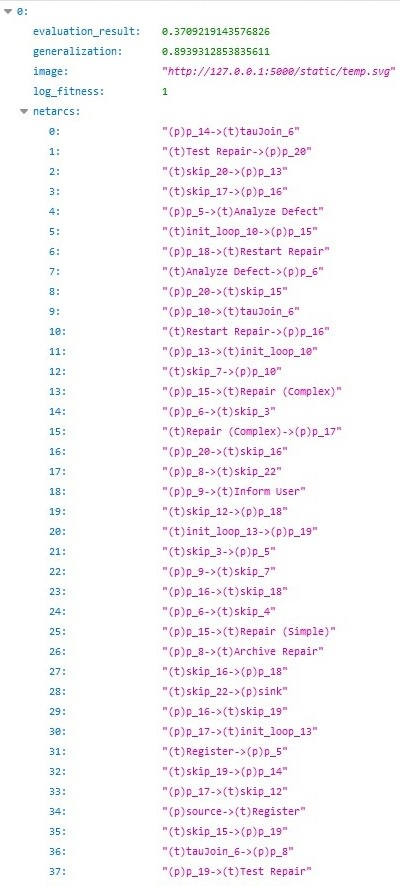
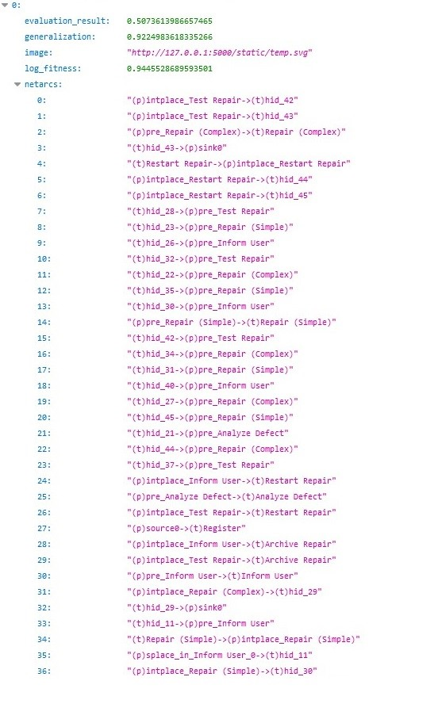
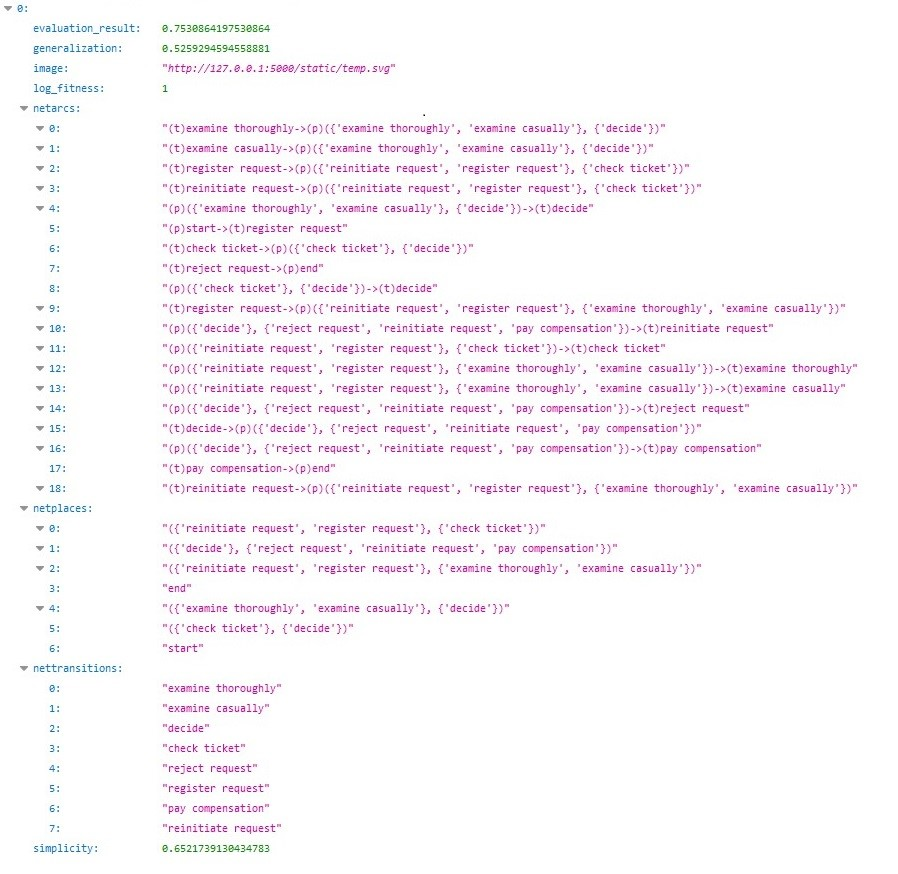
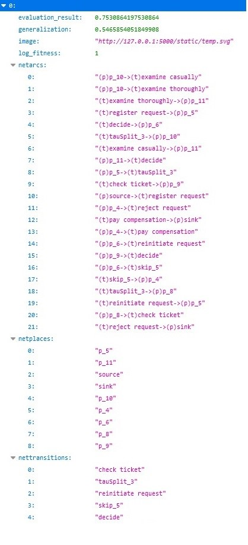
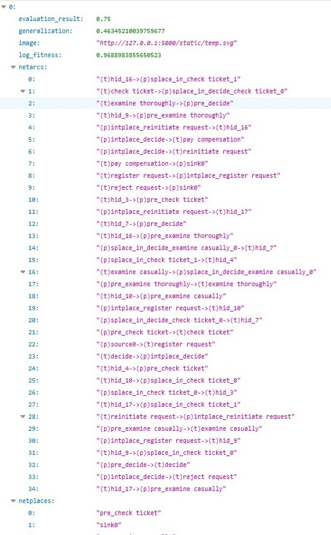

Discover Model¶
Discovery Algorithms for xes files
The web API is using the same endpoint for all three of algorithms (Alpha, Heuristics, Inductive Miner). Although, you should provide different parameters for each algorithm. For the Alpha Miner algorithm, the user has to call the endpoint:
http://127.0.0.1:5000/getimage?filename=(name_of_xesfile)&algorithm=1
For the Inductive Miner algorithm, the user has to call the endpoint:http://127.0.0.1:5000/getimage?filename=(name_of_xesfile)&algorithm=2
For the Heuristic Miner algorithm, the user has to call the endpoint:http://127.0.0.1:5000/getimage?filename=(name_of_xesfile)&algorithm=3
The endpoint returns log_fitness, precision, generalization, simplicity for the specific algorithm and log file. Next, it returns a petri net as svg file (the endpoint saves the petri net on server side), netplaces a list of places of petri net, nettransitions a list of transitions of petrinet and netarcs a list of all the arcs between places and transitions.
parameters:
name: filename
in: query
schema:
type: string
example: repairexample.xes
name: algorithm
in: query
schema:
type: string
example: ‘3’
responses:
‘200’:
description: Auto generated using Swagger Inspector
content:
application/json:
schema:
type: object
properties: {}
examples:
‘0’:
value: |
[
{
“evaluation_result”: 0.5073613986657465,
“generalization”: 0.9224983618335266,
“image”: “http://127.0.0.1:5000/static/temp.svg”,
{kind=link}
“log_fitness”: 0.9445528689593501,
“netarcs”: [
“(t)Register->(p)pre_Analyze Defect”,
“(t)hid_23->(p)pre_Repair (Simple)”,
“(t)hid_42->(p)pre_Test Repair”,
“(t)hid_30->(p)pre_Inform User”,
“(t)hid_35->(p)pre_Repair (Simple)”,
“(p)intplace_Inform User->(t)Restart Repair”,
“(p)intplace_Test Repair->(t)Archive Repair”,
“(p)intplace_Inform User->(t)Archive Repair”,
“(p)intplace_Test Repair->(t)Restart Repair”,
“(p)pre_Analyze Defect->(t)Analyze Defect”,
“(p)source0->(t)Register”,
“(p)pre_Repair (Complex)->(t)Repair (Complex)”,
“(p)intplace_Analyze Defect->(t)hid_22”,
“(p)intplace_Analyze Defect->(t)hid_23”,
“(t)hid_22->(p)splace_in_Inform User_0”,
“(p)intplace_Inform User->(t)hid_37”,
“(p)pre_Test Repair->(t)Test Repair”,
“(t)hid_23->(p)splace_in_Inform User_0”,
“(p)intplace_Inform User->(t)hid_38”,
“(t)hid_38->(p)sink0”,
“(t)Test Repair->(p)intplace_Test Repair”,
“(t)Archive Repair->(p)sink0”,
“(t)Repair (Complex)->(p)intplace_Repair (Complex)”,
“(p)intplace_Test Repair->(t)hid_40”,
“(p)intplace_Repair (Complex)->(t)hid_26”,
“(p)pre_Repair (Simple)->(t)Repair (Simple)”,
“(p)intplace_Repair (Complex)->(t)hid_27”,
“(p)intplace_Test Repair->(t)hid_42”,
“(p)intplace_Repair (Complex)->(t)hid_28”,
“(p)intplace_Test Repair->(t)hid_43”,
“(p)intplace_Repair (Complex)->(t)hid_29”,
“(t)hid_43->(p)sink0”,
“(t)hid_22->(p)pre_Repair (Complex)”,
“(t)hid_29->(p)sink0”,
“(p)intplace_Analyze Defect->(t)hid_21”,
“(t)Restart Repair->(p)intplace_Restart Repair”,
“(t)Repair (Simple)->(p)intplace_Repair (Simple)”,
“(p)intplace_Repair (Simple)->(t)hid_30”,
“(p)intplace_Restart Repair->(t)hid_44”,
“(p)intplace_Repair (Simple)->(t)hid_31”,
“(p)intplace_Restart Repair->(t)hid_45”,
“(p)pre_Inform User->(t)Inform User”,
“(t)hid_40->(p)pre_Inform User”,
“(p)intplace_Repair (Simple)->(t)hid_32”,
“(t)Analyze Defect->(p)intplace_Analyze Defect”,
“(t)hid_31->(p)pre_Repair (Simple)”,
“(t)hid_11->(p)pre_Inform User”,
“(t)hid_34->(p)pre_Repair (Complex)”,
“(t)Inform User->(p)intplace_Inform User”,
“(t)hid_45->(p)pre_Repair (Simple)”,
“(p)splace_in_Inform User_0->(t)hid_11”,
“(t)hid_37->(p)pre_Test Repair”,
“(t)hid_27->(p)pre_Repair (Complex)”,
“(p)intplace_Inform User->(t)hid_35”,
“(t)hid_28->(p)pre_Test Repair”,
“(t)hid_44->(p)pre_Repair (Complex)”,
“(p)intplace_Inform User->(t)hid_34”,
“(t)hid_21->(p)pre_Analyze Defect”,
“(t)hid_32->(p)pre_Test Repair”,
“(t)hid_26->(p)pre_Inform User”
],
“netplaces”: [
“pre_Repair (Simple)”,
“source0”,
“intplace_Restart Repair”,
“sink0”,
“intplace_Test Repair”,
“pre_Repair (Complex)”,
“pre_Test Repair”,
“pre_Analyze Defect”,
“splace_in_Inform User_0”,
“intplace_Repair (Complex)”,
“intplace_Inform User”,
“intplace_Analyze Defect”,
“pre_Inform User”,
“intplace_Repair (Simple)”
],
“nettransitions”: [
“hid_43”,
“hid_22”,
“hid_29”,
“Register”,
“hid_37”,
“hid_30”,
“hid_44”,
“Analyze Defect”,
“Repair (Complex)”,
“hid_38”,
“Repair (Simple)”,
“Inform User”,
“Test Repair”,
“hid_31”,
“Archive Repair”,
“hid_45”,
“Restart Repair”,
“hid_32”,
“hid_11”,
“hid_40”,
“hid_26”,
“hid_23”,
“hid_27”,
“hid_34”,
“hid_21”,
“hid_42”,
“hid_28”,
“hid_35”
],
“simplicity”: 0.5384615384615384
}
]
Discovery Algorithms for csv files
The web API is using the same endpoint for all three of algorithms (Alpha, Heuristics, Inductive Miner). Although, you should provide different parameters for each algorithm. For the Alpha Miner algorithm, the user has to call the endpoint:
http://127.0.0.1:5000/getimagecsv?filename=(name_of_csvfile)&algorithm=1& seperator=(csv_column_separtor)&caseconcept=(the_column to rename)&conceptname=(the_column to rename)×tamp=(the_column to rename)&startevent=(the_column to rename)
For the Inductive Miner algorithm, the user has to call the endpoint:http://127.0.0.1:5000/getimagecsv?filename=(name_of_csvfile)&algorithm=2& seperator=(csv_column_separtor)&caseconcept=(the_column to rename)&conceptname=(the_column to rename)×tamp=(the_column to rename)&startevent=(the_column to rename)
For the Heuristic Miner algorithm, the user has to call the endpoint:http://127.0.0.1:5000/getimagecsv?filename=(name_of_csvfile)&algorithm=3& seperator=(csv_column_separtor)&caseconcept=(the_column to rename)&conceptname=(the_column to rename)×tamp=(the_column to rename)&startevent=(the_column to rename)
get:
description: Auto generated using Swagger Inspector
parameters:
name: caseconcept
in: query
schema:
type: string
example: Case%20ID
name: filename
in: query
schema:
type: string
example: running-example.csv
name: startevent
in: query
schema:
type: string
example: Costs
name: conceptname
in: query
schema:
type: string
example: Activity
name: seperator
in: query
schema:
type: string
example: ;
name: timestamp
in: query
schema:
type: string
example: ‘dd-MM-yyyy:HH.mm’
name: algorithm
in: query
schema:
type: string
example: ‘3’
responses:
‘200’:
description: Auto generated using Swagger Inspector
content:
application/json:
schema:
type: object
properties: {}
examples:
‘0’:
value: |
[
{
“evaluation_result”: 0.75,
“generalization”: 0.46345210039759677,
“image”: “http://127.0.0.1:5000/static/temp.svg”,
“log_fitness”: 0.9688983855650523,
“netarcs”: [
“(t)reinitiate request->(p)intplace_reinitiate request”,
“(p)source0->(t)register request”,
“(t)register request->(p)intplace_register request”,
“(t)examine casually->(p)splace_in_decide_examine casually_0”,
“(p)intplace_decide->(t)reject request”,
“(t)reject request->(p)sink0”,
“(p)pre_examine thoroughly->(t)examine thoroughly”,
“(p)intplace_decide->(t)pay compensation”,
“(p)splace_in_decide_examine casually_0->(t)hid_7”,
“(t)pay compensation->(p)sink0”,
“(t)hid_10->(p)pre_examine casually”,
“(p)intplace_register request->(t)hid_9”,
“(p)splace_in_check ticket_0->(t)hid_3”,
“(p)pre_examine casually->(t)examine casually”,
“(t)hid_10->(p)splace_in_check ticket_0”,
“(t)decide->(p)intplace_decide”,
“(t)hid_9->(p)pre_examine thoroughly”,
“(t)hid_4->(p)pre_check ticket”,
“(t)examine thoroughly->(p)pre_decide”,
“(t)check ticket->(p)splace_in_decide_check ticket_0”,
“(t)hid_16->(p)pre_examine thoroughly”,
“(t)hid_17->(p)splace_in_check ticket_1”,
“(p)intplace_decide->(t)reinitiate request”,
“(p)intplace_reinitiate request->(t)hid_17”,
“(t)hid_17->(p)pre_examine casually”,
“(p)splace_in_check ticket_1->(t)hid_4”,
“(t)hid_3->(p)pre_check ticket”,
“(p)intplace_reinitiate request->(t)hid_16”,
“(p)splace_in_decide_check ticket_0->(t)hid_7”,
“(t)hid_9->(p)splace_in_check ticket_0”,
“(p)intplace_register request->(t)hid_10”,
“(t)hid_16->(p)splace_in_check ticket_1”,
“(p)pre_check ticket->(t)check ticket”,
“(p)pre_decide->(t)decide”,
“(t)hid_7->(p)pre_decide”
],
“netplaces”: [
“splace_in_decide_check ticket_0”,
“pre_check ticket”,
“pre_examine casually”,
“intplace_register request”,
“splace_in_decide_examine casually_0”,
“source0”,
“pre_examine thoroughly”,
“intplace_reinitiate request”,
“pre_decide”,
“intplace_decide”,
“splace_in_check ticket_1”,
“splace_in_check ticket_0”,
“sink0”
],
“nettransitions”: [
“hid_7”,
“hid_10”,
“hid_9”,
“hid_3”,
“hid_16”,
“register request”,
“hid_4”,
“reject request”,
“pay compensation”,
“hid_17”,
“decide”,
“reinitiate request”,
“examine casually”,
“examine thoroughly”,
“check ticket”
],
“simplicity”: 0.6666666666666666
}
]